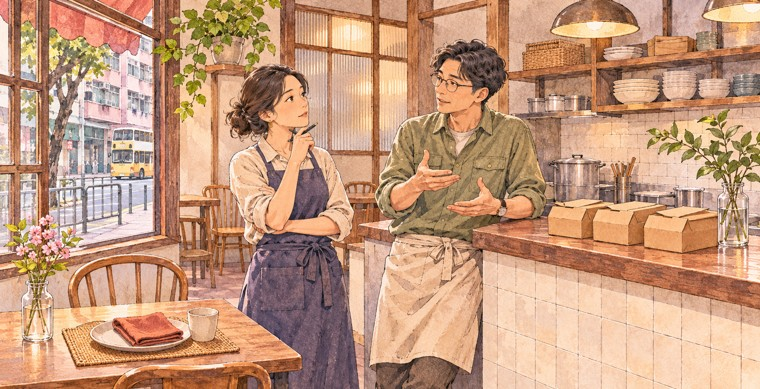

STR-09 · 香港 · 10–15分钟 · 战略 · 市场定位 · 活动配称
推出高价午餐，还是同一门生意吗？

新闻里 · 方案不同，包含的服务也不同
2024年5月8日，香港快运航空宣布将票价类别从两种增至四种，各类票价包含的服务和可选附加服务有所不同。
这则历史公告并不表明这些票价方案彼此不相容或未获成功。下文的午餐业务与此无关，纯属虚构。
课堂决策
虚构的课堂情境。 香港有一家只在工作日做午餐生意的店，顾客是附近上班的人。他们想吃一顿价格适中、供应有保障的午餐，又不想耽搁太久。店里提供三款说明清楚的午餐套餐，顾客可以提前下单，也可以到小柜台点餐，再自行取餐。
团队按有限的菜单分批备餐，按统一流程打包，并明确告知顾客可取餐的时段。店主正在决定下个季度的发展重点：是改进现有服务，还是为小型商务团体开设价格更高、由专人接待的午餐服务。
两个方案的开发预算都包含培训和运营重组，店里都负担得起，但还没有承诺投入任何一项。目前没有可靠且可供比较的需求、利润率或利润预测。对现有顾客作出的承诺照常履行；现在要选的是今后作出什么新承诺。
| 发展重点 | 拟作出的顾客承诺 |
|---|
| A · 改进自取服务 | 让想简单吃顿午餐的上班族更清楚如何提前下单，取餐也更有保障。 |
| B · 开设专人接待午餐服务 | 为愿意考虑更高价位的小型商务团体提供餐前沟通和更个性化的照顾。 |
店里只有一个经营场所、一支运营团队。现有资源足以发展其中任一方案，但团队无法在同一午餐时段既承诺维持原有的快速自取服务，又不限范围地提供专人接待和定制服务。增设团队或场所不在下季度已获批准的资源范围内。
无论采用哪个方案，都必须完成规定的食品安全检查，并提供准确的膳食和过敏原信息。经营上限制菜单选项，并不能免除这些义务。
你的决策下个季度，你会把发展重点放在 A 还是 B？说明你想满足谁的需求，并指出哪一项事实会改变你的选择。
第二轮 · 改了一个事实
为了了解专人接待服务所面向的客户群，店主向一位有意组织公司聚餐的人了解了具体需求：由接待人员与每位用餐者商量如何调整菜单，餐食送到桌上，午餐高峰时也能灵活到场，而且到了以后还可以改选。这只是表达兴趣，并非已签订的订单，也不能证明市场需求已经形成。
团队确认， 可以搭建一套各环节相互配合的专人接待服务 ，且不超出 B 的开发预算，培训和运营重组也包括在内。履行完现有承诺后，店里需要停止对外宣传在该午餐时段照旧提供快速自取服务。
变化不只在菜单上：分批备餐需要更多逐人确认；到场时间和餐点选择都可能变动，不再像原来那样按可预期的时段取餐；统一打包和顾客自取也将改为专人接待和送餐到桌。案例没有提供实测的延误数据，也没有估算会损失多少销售额。
组织者尚未接受缩小服务范围的条款，也没有资金增设第二支团队。两种未来战略仍各自可行，但没有证据表明，用同样的资源就能把两套服务都做全。
你的决策你会保留聚焦自取的服务，还是转向专人接待的市场定位？请指出两项你会保留或改变的活动、一项你不会作出的承诺，以及决定投入预算前需要哪些商业证据。
先问顾客为什么会选你
一位上班族在两个约见之间抽空取午餐，可能看中的正是只有三款套餐：不用多费心选，交接方式也清楚。那位组织者说的是另一种需求：照顾每个人的选择，并有人专门接待这场聚餐。
“高端”并不意味着两种服务可以用同一把尺子来评判好坏。B 可以有吸引力，却未必适合只想简单取个餐的上班族。A 不必加上专人接待，也能把下单和取餐做得更好。
说明日常工作如何兑现承诺
在 A 中，少量固定套餐便于按计划分批备餐；提前下单有助于明确取餐时段；统一打包让交接更简单。学生应说明这些环节如何相互支撑，而不是只罗列特点。
在 B 中，接待人员需要有办法逐一确认用餐者的选择，把改动告知备餐人员，并随各团体到场协调送餐到桌。培训、人员分工和顾客信息都必须支持这套流程。
只改进一个孤立的环节，并不能决定店里究竟要提供哪种服务。
选定要提供的服务，也明确不提供什么
A 可以维持可靠的自取服务，不对外宣传在同一午餐时段还能提供灵活的专人接待和定制服务。B 可以主动调整市场定位，不再向新顾客承诺维持原有的自取体验，并把新服务说清楚。
第二轮信息表明，B 确实是运营上可行的备选方案，并不是一道陷阱。但这些信息并不能证明需求或利润。A 也有机会成本：想要专人接待的顾客可能会去别家。
固定菜单的团体订单可能适合 A，但不是组织者所描述的服务。这需要另行确认对方是否接受，并单独核算成本。日后新增场所或团队可能会改变选择，但两者都要花钱，本案例中也都未获批准。
先验证有没有市场，再花钱
初步选定方向后，要核实需求是否可信、顾客愿意付多少，以及兑现拟议承诺的全部成本。评估 B 时，要计入沟通、按个人要求备餐、接待和培训的成本，不能把更高的售价当成利润率预测。
还要评估服务调整会怎样影响现有自取顾客今后的需求。案例没有给出会流失多少顾客，也没有对两个方案作财务排名。转型前要先履行现有承诺，整个过程中都要保障食品安全，并提供准确的膳食信息。
教师说明
请每组自己画一张简明流程图：目标顾客需求 → 备餐 → 下单 → 交接或服务。说明至少三项活动如何支持所选需求。然后追问：只有一支团队，你们会选择不对外作出哪项承诺？只说“增加功能”或“收集更多信息”，都不算作出了市场定位选择。
这不是一道排队计算题，也不是要给供餐的各个环节提速。B 不同于一次性的定制合同，它将成为持续对外宣传、反复提供的服务。两个方案都能在负担得起的开发预算内实施，但经营回报仍然未知。
不要把未经成本核算的混合方案当成理所当然的答案来给分。学生可以提出第三种服务，但必须说明需要哪些顾客重新认可、需要什么资源，以及哪些成本要核算。资源限制只针对这个虚构季度，并不是一条禁止同时提供不同服务的普遍规则。
第二轮
为了了解专人接待服务所面向的客户群，店主向一位有意组织公司聚餐的人了解了具体需求：由接待人员与每位用餐者商量如何调整菜单，餐食送到桌上，午餐高峰时也能灵活到场，而且到了以后还可以改选。这只是表达兴趣，并非已签订的订单，也不能证明市场需求已经形成。
团队确认， 可以搭建一套各环节相互配合的专人接待服务 ，且不超出 B 的开发预算，培训和运营重组也包括在内。履行完现有承诺后，店里需要停止对外宣传在该午餐时段照旧提供快速自取服务。
变化不只在菜单上：分批备餐需要更多逐人确认；到场时间和餐点选择都可能变动，不再像原来那样按可预期的时段取餐；统一打包和顾客自取也将改为专人接待和送餐到桌。案例没有提供实测的延误数据，也没有估算会损失多少销售额。
组织者尚未接受缩小服务范围的条款，也没有资金增设第二支团队。两种未来战略仍各自可行，但没有证据表明，用同样的资源就能把两套服务都做全。
你的决策你会保留聚焦自取的服务，还是转向专人接待的市场定位？请指出两项你会保留或改变的活动、一项你不会作出的承诺，以及决定投入预算前需要哪些商业证据。